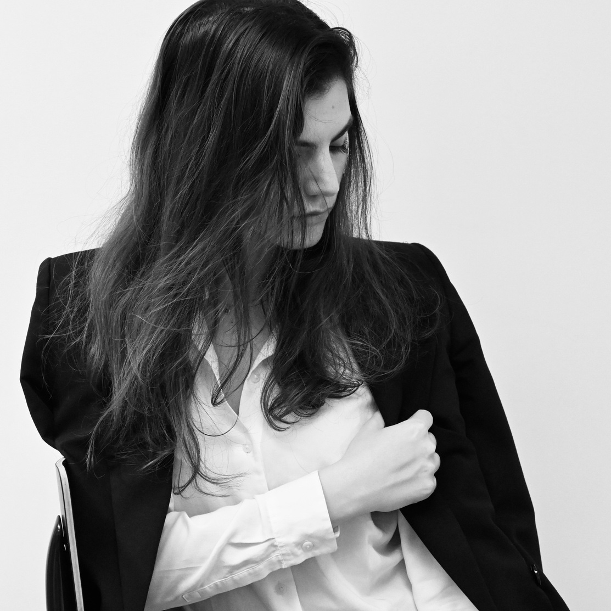
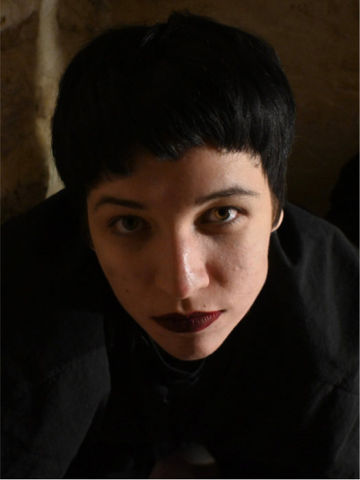
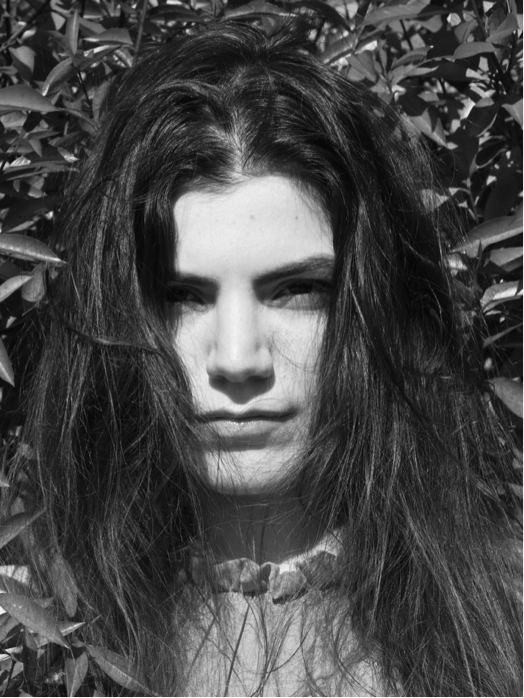

[TODO: CATÉGORIE]
[TODO: TITRE DU PROJET]
Déclenche pour parcourir la série
Intention
[TODO: l'intention de départ. Une phrase forte. Pourquoi ce projet existe.]
Process
[TODO: comment ça s'est fabriqué. Repérages, lumière, choix, accidents heureux.]
Résultat
[TODO: ce qui en est sorti. Le livrable, l'impact, ce qu'on en retient.]
Making of


